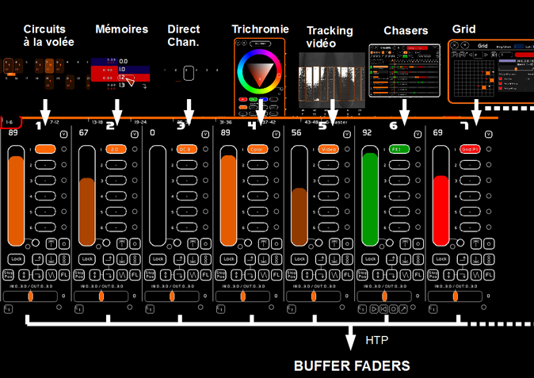
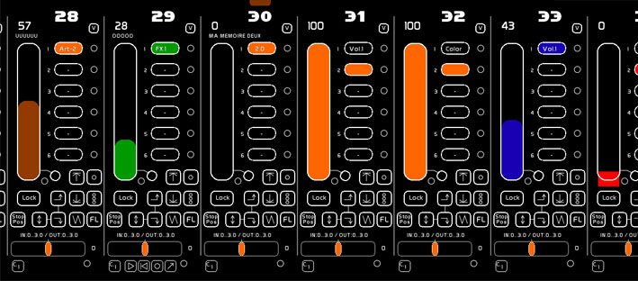
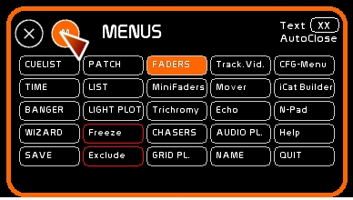
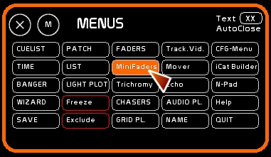

Rôle du Fader
Les 48 Faders de White Cat sont un peu plus que des Masters.
A la différence des Masters classiques que l'on retrouve dans les consoles de théâtre, les faders de White Cat comprennent 6 docks.
Chaque dock peut contenir:
- des états lumineux fixes (masters classiques)
- des états lumineux dynamiques issus de WhiteCat ( chasers, trichromie, tracking video, grid )
- des états lumineux dynamiques issus d'un DMX externe (dmx-in, art-net-in)
- le niveau d'un circuit (direct channel)
- les commandes de l'audio (audio player)
Selon le dock sélectionné, le rendu du Fader est différent. Il dépend de ce qui est chargé dans le dock. Quand on change de dock, on change ce qui est rendu par le fader.
Les sorties des 48 faders sont mergées en HTP dans un buffer dédiés aux faders, distinct du buffer du séquenciel. Les circuits issus du buffer Faders sont affichés en orange.

Chaque fader peut être contrôlé:
- manuellement à la souris ou via un contrôleur midi
- chaque fader peut être timé par les LFO (recevoir un temps de montée, de descente et des delays in/out)
- ou être automatisé en interne par le module Banger, ou bien en midi par un logiciel externe
D'autres entrées permettent de piloter les faders:
- une carte Arduino
- la télécommande iCat pour iPhone/iPod
Il y a deux espaces dédiés aux Faders dans WhiteCat:
- une version étendue, nommée l'espace Faders

On y accède avec la touche [F10] ou en cliquant [Faders]

L'espace Faders permet un travail plus précis et pointu que les Minifaders.
- une vision synthétique, en fenêtre, la fenêtre des Minifaders

On y accède avec la combinaison de touches [shift] [F10] ou en cliquant [MiniFaders]

Les Minifaders intègrent une vision globale, les Locks preset et les commandes All at Zero.